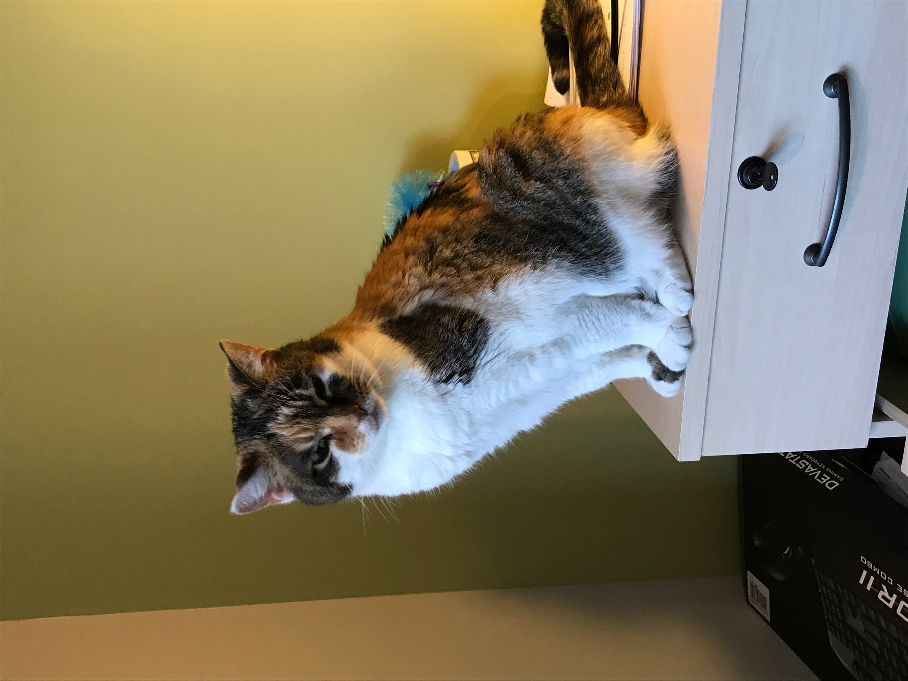

Bear
Bear is a lazy, food-loving dog that is sometimes playful. His favorite activity is lying in the sun on his side and lounging. He enjoys playing with his toys and loves to fetch them when you throw them, but eventually, he gets bored and just stops fetching them and lays down.
Bear is also scared of a lot of things. He doesn’t like water (showers and even rain) or getting his nails clipped, and he’s sometimes even so lazy that he’ll just stop walking and sit down until you turn around and go back home.
Photo Gallery


Likes
- Food
- Laying in bed
- Fetch
Milktea

Milktea is a Scottish fold with a personality of a princess. She loves her veggies and refuses to eat anything dropped on the ground. She makes it clear when she has a demand of any sort by complaining in a loud, distinguished manner. If what she says could be translated, it probably would be, “This is atrocious, the water container has been empty for the 3rd time this week. I want to see the manager.”
Despite her cuteness and royalty, she actually suffers from a genetic disorder brought upon by humans. I highly advise against keeping a Scottish fold because they are in constant pain when they reach around 2 years old. She is living evidence of human’s cruelty of breeding animals to look pretty while sacrificing the animals’ health.
Photo Gallery


Likes
- Individual corn kernels served on human hands
- Sitting royally on suitcases to claim ownership of her humans
- Being alone and sitting on soft surfaces in her free time
Dollar
Dollar is a 1-and-a-half-year-old Australian shepherd. His favorite games are tug of war and fetch. Sometimes, when he goes out for walks, he will pick up a stick to get his owners to play fetch with him. At night, he likes to cuddle with his owners. He would snuggle up and put his nose on their arm to let them know that he wants pets.
Dollar has a gourmet taste for food. He hates eating kibble and will only eat premium chicken with eggs. His favorite snacks are bell peppers, beef bits, and peanut butter. Dollar is incredibly smart and will only do tricks when presented with snacks.
Photo Gallery


Likes
- Bacon bits
- Taking walks in the park
- Jumping on the sofa
Carlos

Carlos is a blue parakeet/budgerigar that my older sister adopted from her friend in high school. Carlos is 9 years old and loves flying around the kitchen. She has very loud chirps and loves to chatter when people play instruments. Although she can be aggressive at times and is very unfriendly towards strangers, she has a very soft bite.
Carlos has a sister named Einstein. We did not discover the genders of our pet birds until years after we named them. At night, Carlos always sleeps on her favorite yellow swing and will wake up in the same spot every morning in the upstairs of her cage ready to come out and play.
Photo Gallery


Likes
- Spinach
- Flying around
- Taking baths
Molly
Molly is an 18-year-old calico cat. She prefers spending her days lounging on the couch or curled up sleeping over a vent (or anything warm). Occasionally, she’ll go outside and attempt to hunt birds or rats (sometimes successful which is terrifying).
Molly’s favorite habit is to brush against people’s legs, especially during dinner when everyone is seated around a table. She’s an attention seeker, always meowing to get as many pets and head rubs as she possibly can.
Photo Gallery


Likes
- Scratching couches
- Sunbathing
- Brushing against people's legs
Basil

Basil, otherwise known as Slaysil, is a very energetic white, slightly crusty and trusty, dog (bichon) . She gets princess treatment in her household, but also out in public. As a consequence, she is very clingy and loves to lick, especially in the face.
She endeavors in multiple hobbies and activities, which include flying, licking, standing on two legs, ringing bells, and jumping through hula hoops.
Photo Gallery


Likes
- Empty water bottles
- Socks
- Cats
Cheeto (Chicken)

Cheeto is a cat who likes to eat a lot and play a lot. He has an obsession with his grandpa (human) and tries to get outside every single day. If he isn’t causing problems, he is usually hiding in a seven foot tall cat tree and sleeping.
Another name for Cheeto is Chicken, because sometimes he sits very scrunched up and ends up looking like a rotisserie chicken. He was nicknamed this by one of his friends, and now he understands it as his own name. He is about six years old and still acts like a younger cat, despite being middle-aged.
Photo Gallery


Likes
- Treats
- Exploring
- My dad